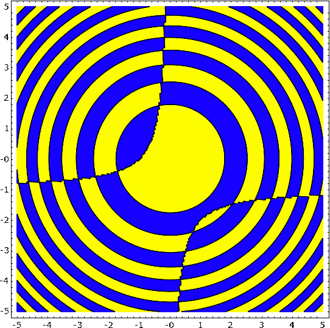

Sage Plotting and Graphics
Sage has a wide range of capabilities for visualizing mathematics. It can
produce
2-D
as well as
3-D
graphics, and even
animated plots. The wiki contains some
examples of images
that can be drawn using Sage.
Interact
Interact provides an interactive tool to dynamically visualize the impact of parameters
on calculations. This is done in a very general way using the basic functionality of Python.
Therefore nearly every possible dependency could be shown. The following animation shows a slider
on top, which can be dragged in the real case - the plot is then updated accordingly. -
see the wiki for more examples
Regions Plot / Contours
A Region Plot draws those regions, where the given equality, inequality or set of them is true.
$$\huge{\frac{sin(x^2 + y^2)}{(1+y+x y)} > 0}$$

sage: var('x y')
sage: region_plot(sin(x^2 + y^2)/(1+y+x*y) > 0, (-5,5), (-5,5), ...
incol='#ffff7f', outcol='#7f7fff', bordercol='black', ...
plot_points=300).show(aspect_ratio=1)
Density Plot
Density Plot of a two dimensional function.
$$\large{sin(x^2 + y^2) * cos(x+y^2) * sin(y)}$$
sage: density_plot(sin(x^2 + y^2) * cos(x+y^2) * sin(y), (-4, 4), (-4, 4), ...
cmap='jet', plot_points=100).show(figsize=(6,6), frame=True)
Filled Plots
A Filled Plot visualizing approximations of $$\large{f(x) = \frac{1}{1 + 25 x^2}}$$.
sage: def f(x):
....: return RDF(1 / (1 + 25 * x^2))
....:
sage: def runge():
....: g = plot(f, -1, 1, rgbcolor='red', thickness=1)
....: polynom = []
....: for i, n in enumerate([6, 8, 10, 12]):
....: data = [(x, f(x)) for x in xsrange(-1, 1, 2 / (n - 1), ...
include_endpoint=True)]
....: polynom.append(maxima.lagrange(data).sage())
....: g += list_plot(data, rgbcolor='black', pointsize=5)
....: g += plot(polynom, -1, 1, fill=f, fillalpha=0.2, thickness=0)
....: return g
....:
sage: runge().show(ymin=0, ymax=1, figsize=(6,4))
Multiedge Graph
A Multiedge Graph visualizing all pairs of characters in the sentence "I am a cool multiedge graph with loops".
sage: stnc = 'I am a cool multiedge graph with loops'
sage: g = DiGraph({}, loops=True, multiedges=True)
sage: for a,b in [(stnc[i], stnc[i+1]) for i in xrange(len(stnc)-1)]:
....: g.add_edge(a, b, b)
sage: g.plot(color_by_label=True, edge_style='solid').show(figsize=(8,8))